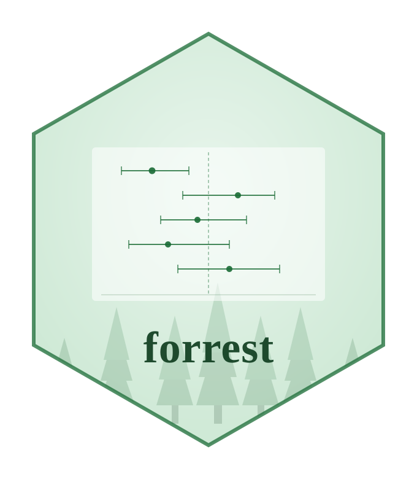
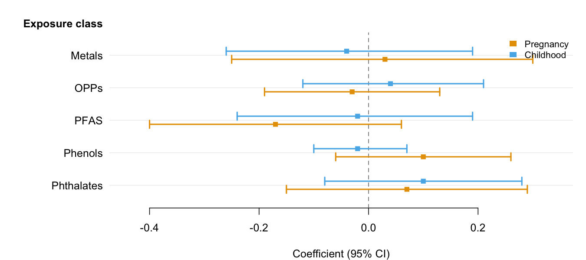
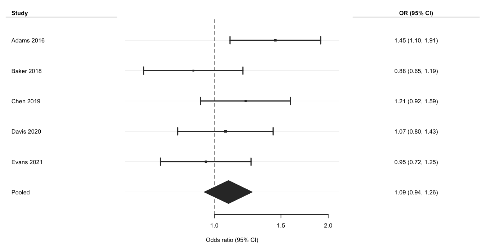
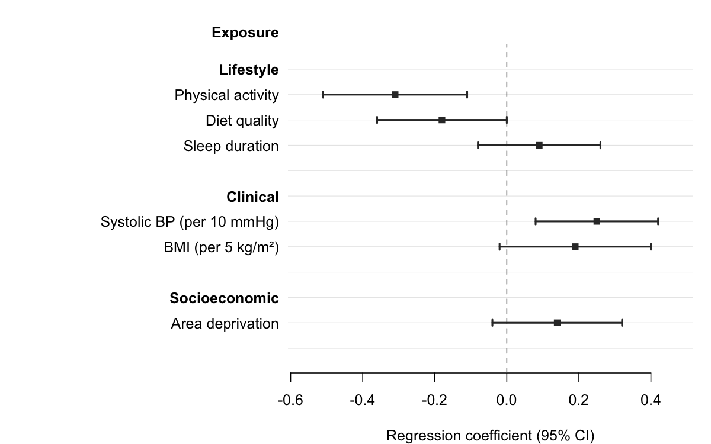
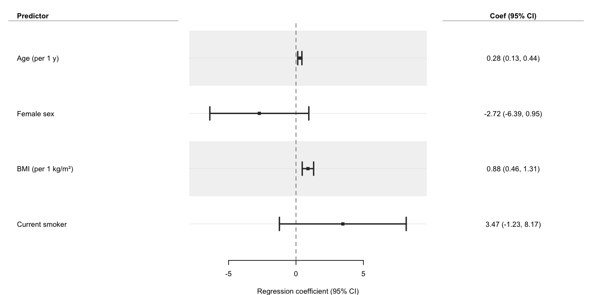

forrest



forrest draws publication-ready forest plots from any data frame with one row per estimate and columns for the point estimate and its confidence limits: regression coefficients, subgroup estimates, studies in a meta-analysis, exposure categories. Its only dependency is tinyplot.
A single function, forrest(), covers the layouts these tables need:
- bold section headers, and optionally a second level of sub-headers, generated from grouping columns, so the data never need hand-inserted blank rows;
- diamonds for pooled or overall estimates, and label-only rows for reference categories;
- colours and point shapes mapped from columns, with legends, and several estimates per row offset vertically so their intervals do not overlap;
- formatted text columns beside the plot, such as estimates with confidence intervals or p-values;
- a log axis for ratio measures, marker sizes scaled by study weight, row stripes, three themes, and arrows where an interval runs past the axis limits.
save_forrest() writes the plot to PDF, PNG, SVG or TIFF. Both functions accept data frames, tibbles and data.tables.
Installation
install.packages("forrest")
# Development version from GitHub:
# install.packages("pak")
pak::pak("lorenzoFabbri/forrest")Examples
Several estimates per row
The minimal call names three columns: estimate, lower and upper. Here each exposure class has two estimates, one per period; group colours them and dodge = TRUE draws both within the exposure’s row. The introduction shows every feature in turn.
library(forrest)
# Two estimates per exposure (e.g., two time windows)
periods <- data.frame(
exposure = rep(c("Metals", "OPPs", "PFAS", "Phenols", "Phthalates"), each = 2),
period = rep(c("Pregnancy", "Childhood"), 5),
est = c( 0.03, -0.04, -0.03, 0.04, -0.17, -0.02, 0.10, -0.02, 0.07, 0.10),
lo = c(-0.25, -0.26, -0.19, -0.12, -0.40, -0.24, -0.06, -0.10, -0.15, -0.08),
hi = c( 0.30, 0.19, 0.13, 0.21, 0.06, 0.19, 0.26, 0.07, 0.29, 0.28)
)
forrest(
periods,
estimate = "est",
lower = "lo",
upper = "hi",
label = "exposure",
group = "period",
dodge = TRUE,
header = "Exposure class",
xlab = "Coefficient (95% CI)"
)
Meta-analysis
With log_scale = TRUE the axis is logarithmic and the reference line moves to 1. is_summary draws the pooled row as a diamond, and weight scales each study’s marker by its inverse-variance weight. The meta-analysis vignette adds subgroup analyses and several exposures per study.
ma <- data.frame(
study = c("Adams 2016", "Baker 2018", "Chen 2019",
"Davis 2020", "Evans 2021", "Pooled"),
est = c(1.45, 0.88, 1.21, 1.07, 0.95, 1.09),
lo = c(1.10, 0.65, 0.92, 0.80, 0.72, 0.94),
hi = c(1.91, 1.19, 1.59, 1.43, 1.25, 1.26),
weight = c(180, 95, 140, 210, 160, NA),
is_sum = c(FALSE, FALSE, FALSE, FALSE, FALSE, TRUE)
)
ma$or_ci <- sprintf("%.2f (%.2f, %.2f)", ma$est, ma$lo, ma$hi)
forrest(
ma,
estimate = "est",
lower = "lo",
upper = "hi",
label = "study",
is_summary = "is_sum",
weight = "weight",
log_scale = TRUE,
header = "Study",
cols = c("OR (95% CI)" = "or_ci"),
widths = c(2.2, 4, 2.5),
xlab = "Odds ratio (95% CI)"
)
Section headers
With section, forrest() inserts a bold header wherever the named column changes value, indents the rows beneath it and leaves a blank row after each group.
subgroups <- data.frame(
domain = c("Lifestyle", "Lifestyle", "Lifestyle",
"Clinical", "Clinical",
"Socioeconomic"),
exposure = c("Physical activity", "Diet quality", "Sleep duration",
"Systolic BP (per 10 mmHg)", "BMI (per 5 kg/m\u00b2)",
"Area deprivation"),
est = c(-0.31, -0.18, 0.09, 0.25, 0.19, 0.14),
lo = c(-0.51, -0.36, -0.08, 0.08, -0.02, -0.04),
hi = c(-0.11, -0.00, 0.26, 0.42, 0.40, 0.32)
)
forrest(
subgroups,
estimate = "est",
lower = "lo",
upper = "hi",
label = "exposure",
section = "domain",
header = "Exposure",
xlab = "Regression coefficient (95% CI)"
)
Regression models
broom::tidy() turns a fitted model into a data frame that forrest() plots directly. cols adds a formatted text column and header labels the label column. The regression vignette covers adjustment sets, multiple outcomes, exposure categories, and average treatment effects by g-computation and inverse probability weighting.
set.seed(1)
n <- 300
dat <- data.frame(
sbp = 120 + rnorm(n, sd = 15),
age = runif(n, 30, 70),
female = rbinom(n, 1, 0.5),
bmi = rnorm(n, 26, 4),
smoker = rbinom(n, 1, 0.2)
)
dat$sbp <- dat$sbp + 0.3 * dat$age - 4 * dat$female +
0.5 * dat$bmi - 2 * dat$smoker + rnorm(n, sd = 6)
fit <- lm(sbp ~ age + female + bmi + smoker, data = dat)
coefs <- broom::tidy(fit, conf.int = TRUE)
coefs <- coefs[coefs$term != "(Intercept)", ]
coefs$term <- c("Age (per 1 y)", "Female sex",
"BMI (per 1 kg/m²)", "Current smoker")
coefs$coef_ci <- sprintf(
"%.2f (%.2f, %.2f)",
coefs$estimate, coefs$conf.low, coefs$conf.high
)
forrest(
coefs,
estimate = "estimate",
lower = "conf.low",
upper = "conf.high",
label = "term",
header = "Predictor",
cols = c("Coef (95% CI)" = "coef_ci"),
widths = c(3, 4, 2.5),
xlab = "Regression coefficient (95% CI)",
stripe = TRUE
)
Compared with other packages
The table compares forrest with three other forest-plot packages: forestplot 3.2.0, forestploter 1.2.0 and ggforestplot 0.1.0, as checked against their documentation and source in November 2026. A ⚠️ marks partial support, explained below the table.
| Feature | forrest | forestplot | forestploter | ggforestplot |
|---|---|---|---|---|
| Dependencies outside base R | 1 | 2 | 2 | 19 |
| Not tied to meta-analysis | ✅ | ✅ | ✅ | ⚠️ |
| Marker size from weights | ✅ | ✅ | ✅ | ❌ |
| Section headers from a grouping column | ✅ | ❌ | ❌ | ❌ |
| Two levels of section headers | ✅ | ❌ | ❌ | ❌ |
| Summary diamonds | ✅ | ✅ | ✅ | ❌ |
| Text columns | ✅ | ✅ | ✅ | ❌ |
| Row stripes | ✅ | ✅ | ✅ | ✅ |
| Arrows for intervals past the axis limits | ✅ | ✅ | ✅ | ❌ |
| Colour by group, with legend | ✅ | ✅ | ✅ | ✅ |
| Log axis | ✅ | ✅ | ✅ | ✅ |
| Function to save the plot to a file | ✅ | ❌ | ⚠️ | ❌ |
| Release or commit in the past year | ✅ | ✅ | ✅ | ❌ |
ggforestplot takes standard errors rather than confidence limits and is built around biomarker association plots. forestploter has no save function, but get_wh() returns the dimensions to pass to a graphics device.
Acknowledgements
forrest was developed with the assistance of Claude Code, Anthropic’s agentic coding tool.